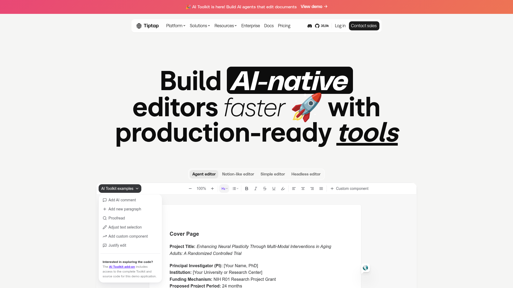
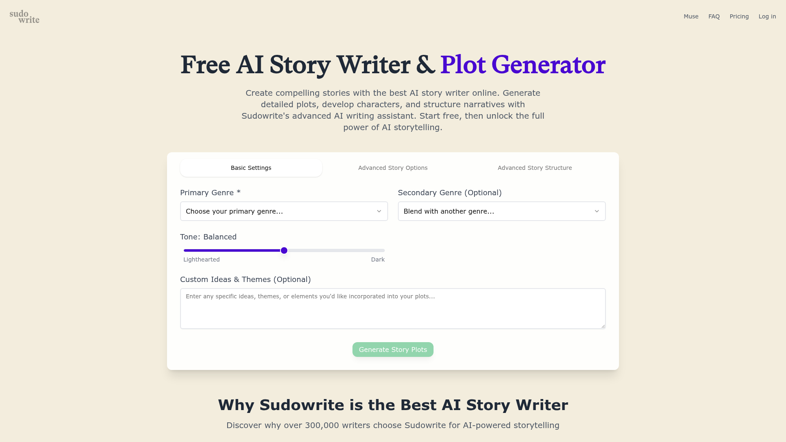
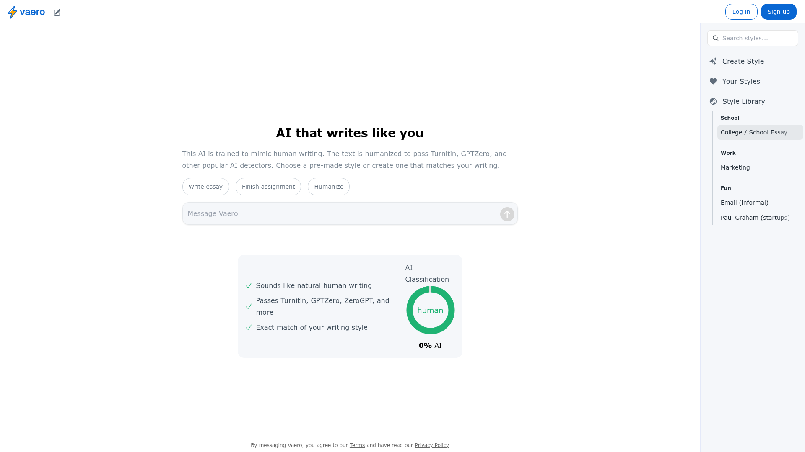
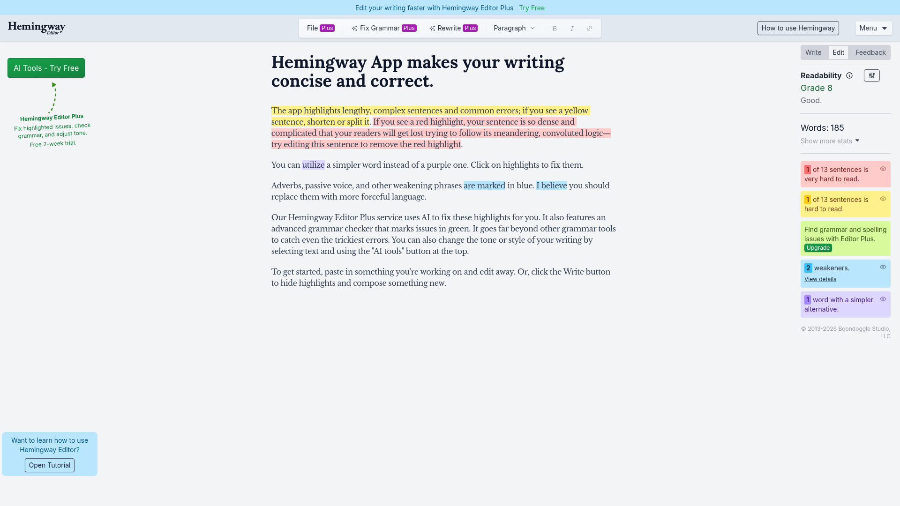

Quick References: Writing Style Toolbar
Article-Flow · Generated 2026-05-29 via Lazyweb MCP
TL;DR
The best AI writing tools separate style selection, intensity control, and apply action.
Article-Flow's toolbar is structurally sound — references suggest scannable mode chips,
style descriptions on demand, and post-convert feedback in a side panel.
Patterns
Inline compact bar — dropdown + slider + action (Article-Flow today)Sidebar mode picker — vertical rewrite modes + live preview (Quillbot)Editor + analysis rail — clean canvas, metrics on the right (Hemingway)
Article-Flow mapping
Current
┌──────────────────────────────────────────────────────────────┐
│ 风格 [下拉] │ 浓度 [━━●━━] 72% │ 恢复正式 │ ✦ 风格转换 │
└──────────────────────────────────────────────────────────────┘
Recommended evolution
┌──────────────────────────────────────────────────────────────┐
│ [正式] [幽默] [叙事] ... │ 浓度 ━━●━━ 72% │ ✦ 转换选中/全文 │
└──────────────────────────────────────────────────────────────┘
References
Pattern A: Named rewrite modes
Quillbot — Toggleable modes (Standard, Fluency, Formal, Creative, Shorten, Expand). Use pill buttons instead of a hidden dropdown for top styles.
Pattern B: AI toolkit beside editor

Tiptap — AI actions grouped in a left rail, editor stays central Lazyweb
Pattern C: Intensity as continuous dial

Sudowrite — Genre picks + tone slider for gradation Lazyweb
Pattern D: Style library catalog

Vaero — Searchable, categorized style personas Lazyweb
Pattern E: Editor + quality sidebar

Hemingway — Central editor, right rail for readability metrics Lazyweb
Suggested next steps
Priority Change Reference High Style pills for top presets + dropdown overflow Quillbot Medium Style description on hover/focus Vaero Medium Grey slider track past per-style maxIntensity Sudowrite Low Post-convert stats in side panel Hemingway